Once upon a time, in a land shrouded in shadow, there lived a simple bread maker named William.
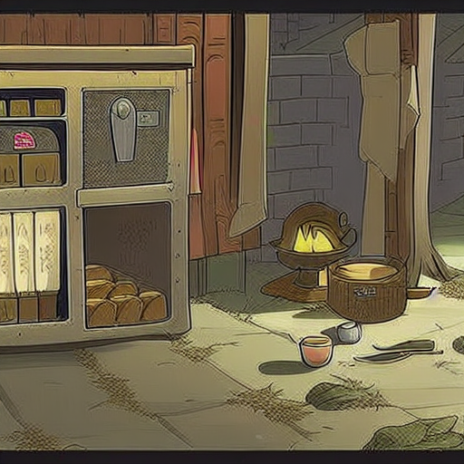Each morning, he would take pride in kneading dough and baking loaves of warm, fragrant bread until they glowed softly like the moon.
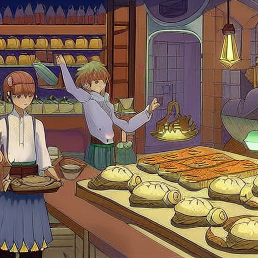However, few knew that beneath his aprons lay hidden virtues - William held the key to unlocking mystical secrets of long ago legends, which he kept tightly bound within his heart.

One evening as the sun began to set over the distant mountains beyond the fields outside town, a lone stranger approached the town gates seeking food in exchange for news of faraway lands.
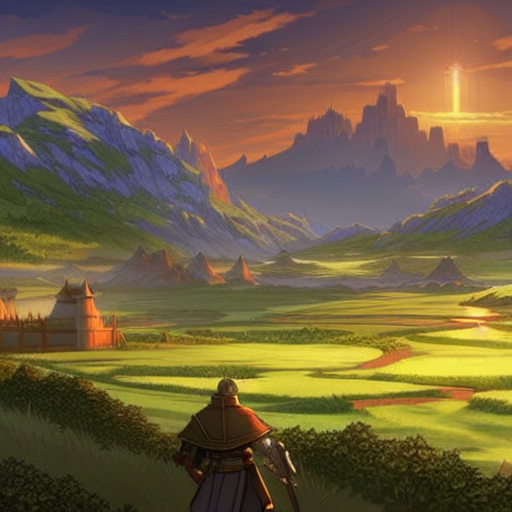As soon as the townspeople heard tales of giants and monsters terrorizing villages just beyond their own, they turned pale and begged their wise advisor among them for guidance.

Thus, William bravely ventured forth into the unknown world wearing leather armor fashioned from supple deerskin and carrying a bow wrought from elven hands.
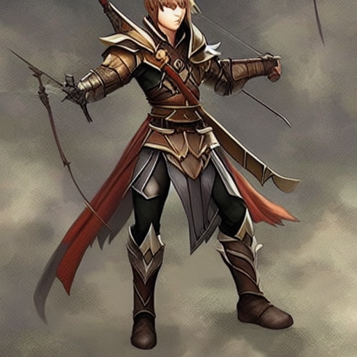With each step towards adventure, the wind carried the scents of pine and earth along the road, as though whispering promises of discovery yet unfound.
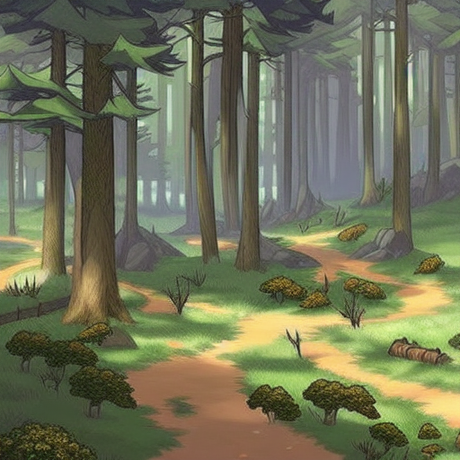After traveling for many hours by foot, the path diverged where the trees grew thin and revealed an open plain marked by two colossal pillars formed from ancient rock.
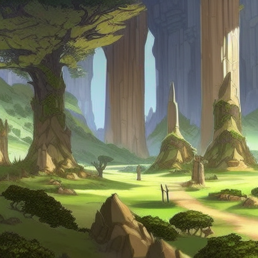Though apprehensive at first glance, these stone sentinels towered high above William like silent watchdogs guarding the secrets of ages past.
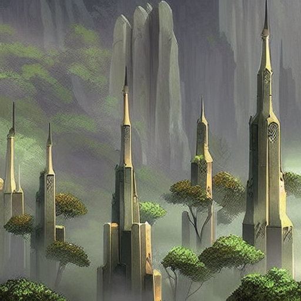Only by using his wit did this simple mortal manage to solve the riddle posed by the immovable walls blocking his journey northward.
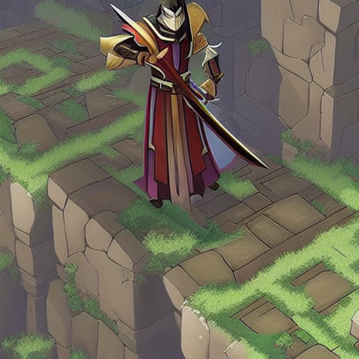The clue required that William seek out the advice of great heroes of yesteryear whose stories echoed still today...
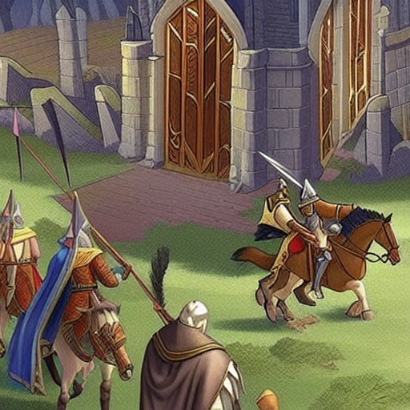yet the question remained whether the young traveler would survive long enough to find those answers.
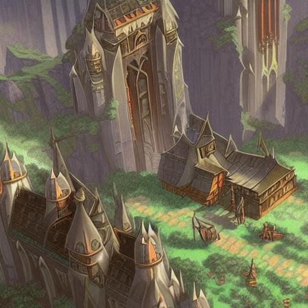Upon arriving at a ruined stronghold nestled deeply within a mountain range cloaked in mist and mystery, William discovered a crumbling gateway leading further upwards.
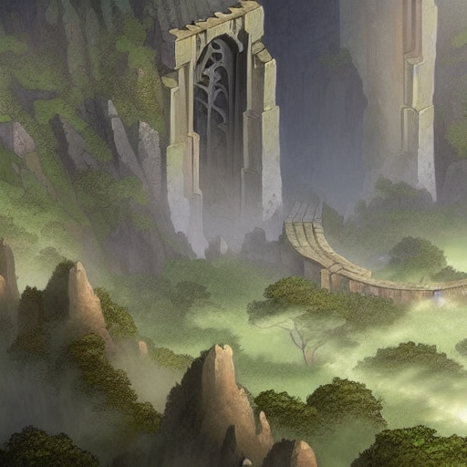Pulling aside the rubble, he encountered a hidden chamber swathed in shadows -- however, the air shimmered faintly with ethereal whispers hinting at powerful spells of old.

Steeling his nerves, William drew upon wisdom and courage buried deep inside his heart and invoked several enchanted incantations crafted eons earlier than his own birthright.
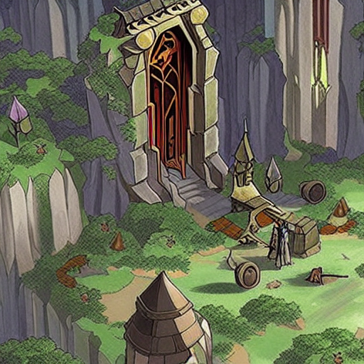Through this dark portal he descended, into a labyrinth carved from living granite...
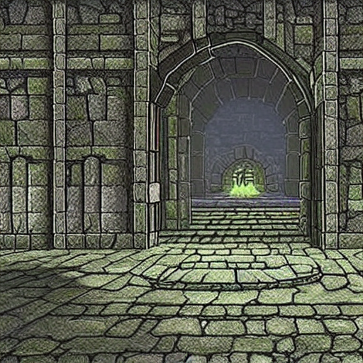and emerged with a new understanding of ancient knowledge lost since the beginning of recorded history.
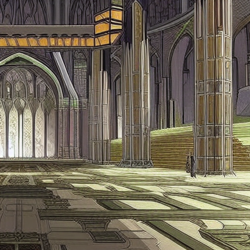Finally reaching the mountaintop sanctum where secrets flowed freely as snowdrifts upon winter's breath, William sought audience with the one figure he hoped could help banish the terrible terrors plaguing neighboring lands.
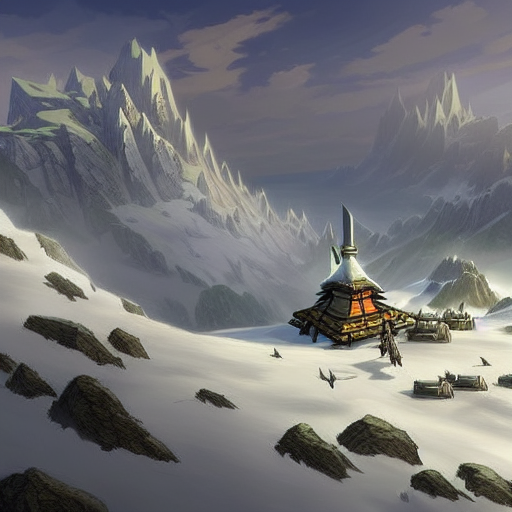Before him lay the aged sorceress Opal Windwhisper, ensconced amidst silken sheets and velvet coverlets fit for queens...
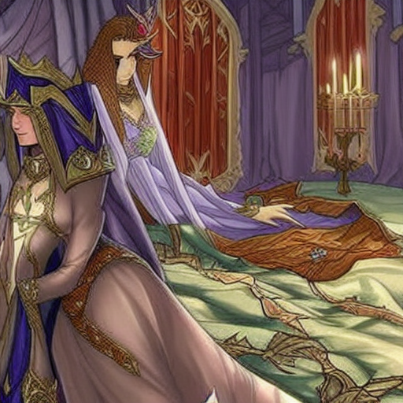but William had no such luxury in mind upon entering her presence.
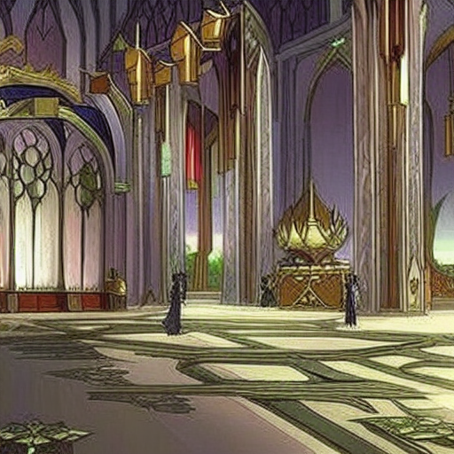Sweat gleamed across his forehead from the tiring climb while nervous energy coursed throughout every vein.
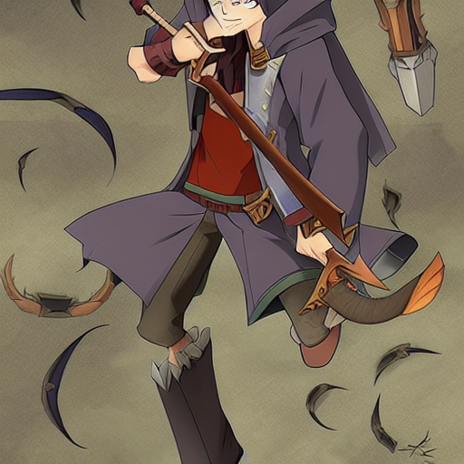Barely able to utter the name \"Medusa\", William stammered the reasons behind requesting her council despite knowing full well she herself had faced and defeated countless horrors during her lengthy lifetime -- including foul serpents coiling thick and knotted as snakes swarming in search of death.
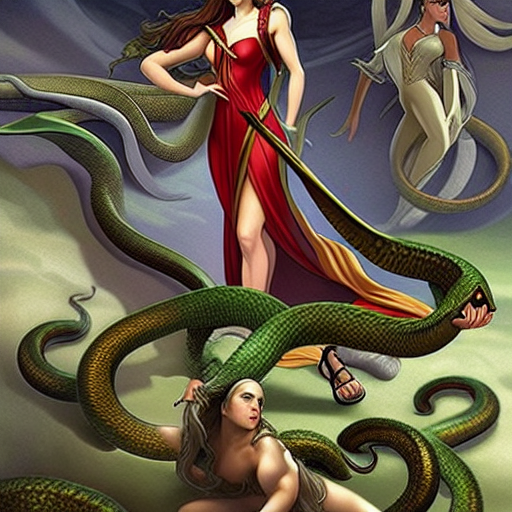Recalling Medusa's own tale involving winged horses of bronze and chimeras blending attributes as natural as dreams coming true after lifetimes spent yearning for impossible wishes fulfilled beyond imagination's reach, she realized that perhaps destiny awaited her latest guest...
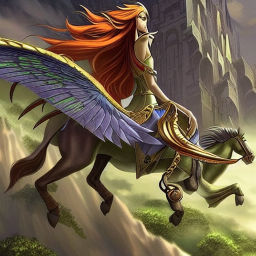who lacked the slightest resemblance to fearsome visages beyond nightmares spawned in the human psyche.
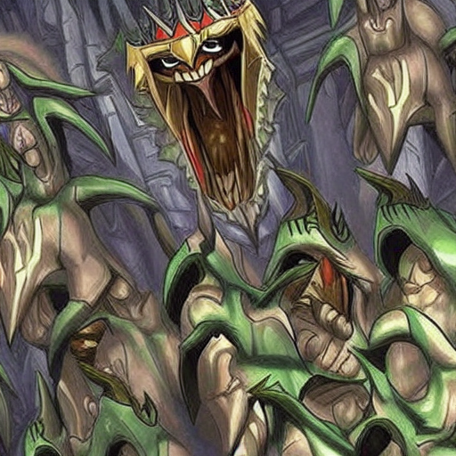Nonetheless, as she gazed into William's eyes reflecting twilight stars glimmering far off in the east and listened intently, Medusa discerned that beneath his simple robes sequestered a burning inner flame rivaling Prometheus itself...
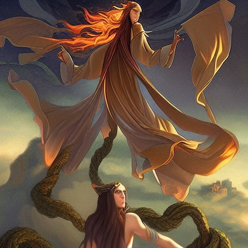and thus decided to share wisdom regarding dragons requiring slaying if civilization hung on the balance of survival versus conquest written across the face of Time itself.
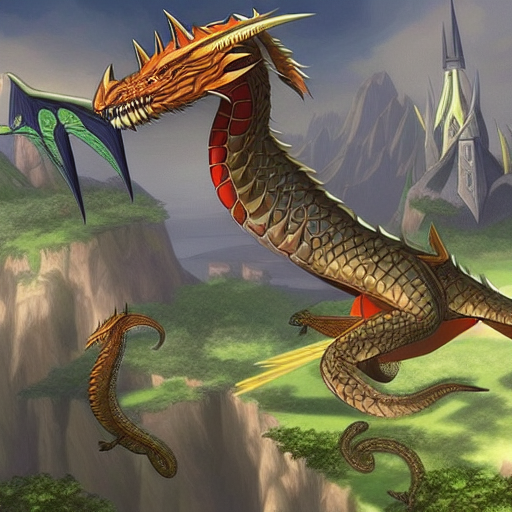